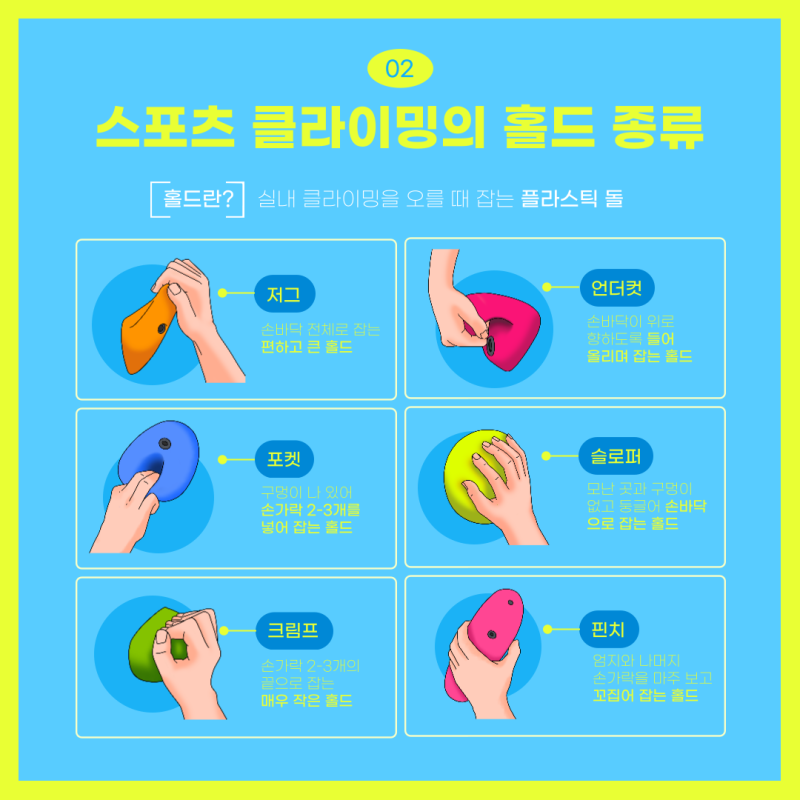

Sports Climbing
3-1. 홀드의 종류

- 저그(jug)
저그 홀드는 손가락을 펴서 안정성 있게 잡을 수 있는 큰 홀드를 의미한다.
위에 손가락이 잘 안착되어 안정성있게 잡을 수 있는 홀드이다.
홀드 잡는 법: 홀드 손을 올려 편하게 잡을 수 있다.
- 포켓(pocket)
포켓 홀드는 홀드 중간에 구멍이 나있는 모양의 홀드이다.
크기와 구멍의 모양에 따라 2개의 손가락, 3개의 손가락을 넣어 잡는다.
홀드 잡는 법: 구멍에 2개 혹은 3개의 손가락을 넣어 강한 압력으로 홀드를 잡는다.
구멍 사이즈에 따라 손가락을 넣을 수 있는만큼 많이 넣어 힘을 분산시키는 것이 좋다.
- 크림프(crimp)
크림프 홀드란 매우 작은 홀드를 나타내며 손가락 몇 개만 살짝 걸칠 수 있는 홀드를 의미한다.
이 홀드는 조심하지 않으면 손가락 부상 입기 쉬운 홀드이다.
홀드 잡는 법: 3가지 방법를 사용하여 크림프 홀드 효율적으로 잡는 방법이 있다
- 오픈핸드(open-hand)
따로 손가락을 누르지않고 편하게 손바닥을 펴고 홀드를 잡은 상태를 말한다.
이런 그립은 염좌 부상의 위험성을 줄일 수 있는 것으로 알려져 있다.
- 헬프그립(half crimp)
손가락 첫째마디가 둘째 마디와 같은 위치에 있는 그립을 의미한다.
일반적으로 오픈 핸드보다 손가락에 더 큰 무리를 줄 수 있다.
- 풀클림프(full crimp)
손가락 첫째마디로 둘째마디를 눌러서 홀드를 잡은 상태를 말한다.
오픈 그립과는 다르게 구조적으로 안정되지않아 크고 작은 손가락 인대에 높은 압력이 작용하게 된다.
- 언더그립(undercut)
언더그립 홀드란 홀드의 잡는 부분이 아래쪽을 향해있어 체중을 위로 걸리게 하는 홀드를 의미한다.
홀드 잡는 법: 다른 홀드들과는 달리 손바닥이 위쪽를 향해 무게를 지탱하도록 거꾸로 잡는다.
이 홀드는 홀드 위쪽에 클라이머가 있을 때 잡기 편해진다.
- 슬로퍼(sloper)
슬로퍼 홀드는 보통 둥글둥글한 커다란 홀드들을 의미한다.
모서리가 뾰족하거나 구멍 혹은 튀어나온 곳이 없는 홀드이다.
홀드 잡는 법: 손바닥을 쫙 핀 후 잡을 수 있게되는 부분을 엄지손가락과 함께 넓혀서 잡도록 한다.
손가락이 아니라 손바닥을 사용해 잡는다는 느낌으로 홀드에 무게를 싣는다.
- 핀치(pinch)
핀치 홀드란 엄지손가락과 남은 4손가락을 반대 방향으로 잡아 압력을 주는 홀드를 의미한다.
홀드 잡는 법: 모든 손가락으로 꼬집듯이 잡아 무게를 지탱한다.